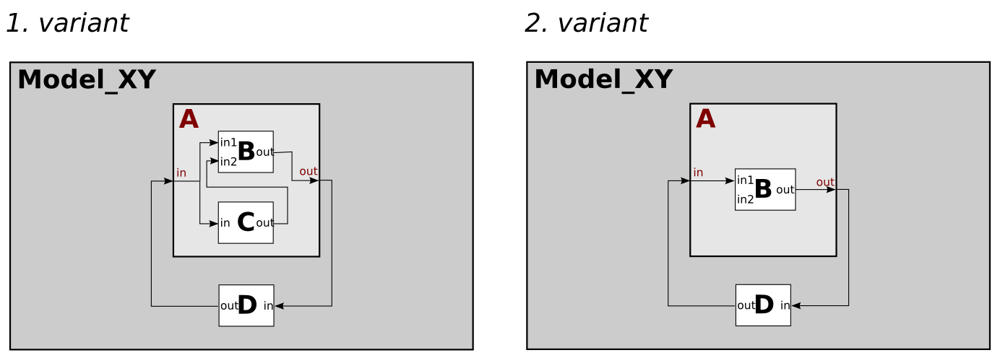

Variant Modelling Using Aspects Siblings
(alternative has-a relations)
Motivation
This example shows, how you can describe different model structures in a single SES by using Aspect Siblings. The example SES specifies two alternative model structures (variants).
Basic SES:

In the SES specified model structures:

Entities
Variant 1 - The model consist of:
- atomic models (AM): B, C, D
- coupled models (CM): A
Variant 2 - The model consist of:
- atomic models (AM): B, D
- coupled models (CM): A
Description
Aspect Siblings
Aspect Siblings decribe alternative system variants, each Aspect with its own has-a relation. In order to control the selection of a variant during pruning you need to add an Aspect Rule (Aspectrule). Aspect Rules are similiar to Specialization Rules (see ex. 2). Here, the SES Variable "varVariant" is defined to specify the Aspectrule.
SES Variables
basic explanation see example 2
Semantic Conditions
basic explanation see example 2
Aspectrule
After defining the SES Variable "varVariant" you can set the Aspectrule. Select one of the Aspect-Siblings (doesn`t matter which) and add your conditions. Each rule consists of a condition and a selection, that occurs, when the condition is valid. Be sure not to enter conditions that could be valid at the same time, as it will lead to an error message during pruning.